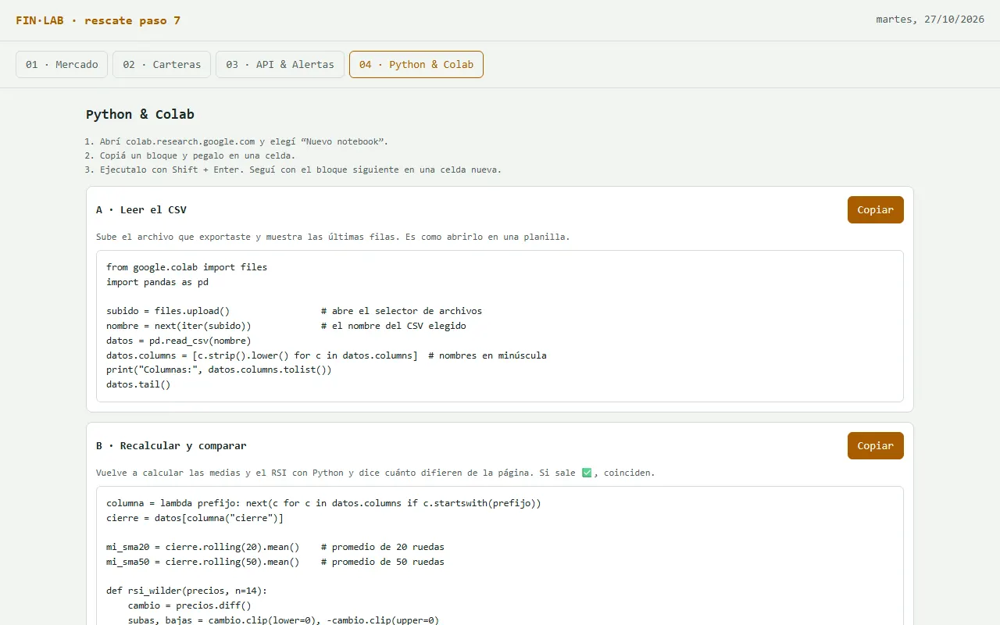

PASO 7 · EL MISMO CÁLCULO, CON OTRA HERRAMIENTA
Del CSV a Google Colab: verificar con Python
La mejor forma de confiar en un cálculo es hacerlo dos veces con herramientas distintas. Van a llevar el CSV del paso 4 a Google Colab y recalcular las medias y el RSI con pandas. Si la página y Python coinciden, el cálculo es confiable.
¿Llegan tarde o se rompió el archivo? Bajen la versión con la que termina el paso 6, guárdenla como finlab.html y arranquen este paso desde ahí. ⬇ BAJAR EL PUNTO DE PARTIDA (PASO 6)
Qué van a lograr
Un notebook de Colab con tres celdas que lee su CSV, recalcula los indicadores y les dice cuánto difieren de la página:
RESULTADO ESPERADO · SALIDA DE LA CELDA B
Diferencia máxima SMA20: 0.004 Diferencia máxima SMA50: 0.004 Diferencia máxima RSI : 0.003 ✅ La página y Python coinciden (todas las diferencias son menores a 0,01)
Así va quedando
- Esqueleto (ya está)
- Datos (ya está)
- Mercado (ya está)
- Indicadores (ya está)
- Carteras (ya está)
- API (ya está)
- Colab (este paso)
- n8n (todavía no)
- #/guiado (todavía no)
- Clave (todavía no)
- Modelo (todavía no)
- Agente (todavía no)
- Consejo (todavía no)
- MCP (todavía no)

Qué hacer, clic por clic
- Tengan a mano el CSV del paso 4. Si no lo tienen, abran su terminal, elijan un activo y toquen Exportar CSV. ¿Tampoco funciona? Usen el de respaldo: ⬇ CSV DE RESPALDO (AAPL)
- Entren a colab.research.google.com con una cuenta de Google y elijan Nuevo notebook (o Archivo → Nuevo notebook).
- Copien el bloque A de “El código para pegar en Colab”, más abajo, péguenlo en la primera celda y ejecútenlo con el botón ▶ o Shift + Enter.
- Aparece un botón “Elegir archivos” debajo de la celda: elijan el CSV. Al terminar se ve una tabla con las últimas filas.
- Toquen “+ Código” para crear una celda nueva, peguen el bloque B y ejecútenlo. Lean las diferencias.
- Hagan lo mismo con el bloque C: aparece el gráfico.
- Guarden el notebook en su Drive (Archivo → Guardar una copia en Drive) con el nombre del grupo.
- Opcional · en su terminal, peguen el prompt de “Pestaña Python (opcional)”, más abajo, para que la pestaña 04 muestre estos mismos bloques, y guarden finlab-v7.html.
La primera vez, Colab puede tardar unos segundos en “conectarse” (arriba a la derecha dice Conectando). Y si pide permiso para acceder a Drive, no hace falta darlo: el CSV se sube directo.
El código para pegar en Colab
Este código ya está probado. Pueden usarlo tal cual o pedirle a la IA que se lo explique línea por línea.
BLOQUE A · LEER EL CSV
Sube el archivo y muestra las últimas 5 filas.
from google.colab import files
import pandas as pd
subido = files.upload() # abre el selector de archivos
nombre = next(iter(subido)) # el nombre del CSV elegido
datos = pd.read_csv(nombre)
datos.columns = [c.strip().lower() for c in datos.columns] # nombres en minúscula
print("Columnas:", datos.columns.tolist())
datos.tail()BLOQUE B · RECALCULAR Y COMPARAR
Las mismas fórmulas del paso 4, en pandas.
columna = lambda prefijo: next(c for c in datos.columns if c.startswith(prefijo))
cierre = datos[columna("cierre")]
mi_sma20 = cierre.rolling(20).mean() # promedio de 20 ruedas
mi_sma50 = cierre.rolling(50).mean() # promedio de 50 ruedas
def rsi_wilder(precios, n=14):
cambio = precios.diff()
subas, bajas = cambio.clip(lower=0), -cambio.clip(upper=0)
g, l = subas.iloc[1:n + 1].mean(), bajas.iloc[1:n + 1].mean() # arranque: promedio simple de 14
rsi = pd.Series(float("nan"), index=precios.index)
rsi.iloc[n] = 100 - 100 / (1 + g / l)
for i in range(n + 1, len(precios)): # después: suavizado de Wilder
g = (g * (n - 1) + subas.iloc[i]) / n
l = (l * (n - 1) + bajas.iloc[i]) / n
rsi.iloc[i] = 100 - 100 / (1 + g / l)
return rsi
mi_rsi = rsi_wilder(cierre)
difs = {
"SMA20": (mi_sma20 - datos[columna("sma20")]).abs().max(),
"SMA50": (mi_sma50 - datos[columna("sma50")]).abs().max(),
"RSI ": (mi_rsi - datos[columna("rsi")]).abs().max(),
}
for nombre_ind, dif in difs.items():
print(f"Diferencia máxima {nombre_ind}: {dif:.3f}")
print("✅ La página y Python coinciden" if max(difs.values()) < 0.01 else "❌ Hay diferencias: revisen la fórmula en la página")BLOQUE C · GRAFICAR
Precio y medias, como el gráfico de la terminal.
import matplotlib.pyplot as plt
fechas = datos[datos.columns[0]] # la primera columna es la fecha
plt.figure(figsize=(10, 4))
plt.plot(fechas, cierre, label="Cierre")
plt.plot(fechas, mi_sma20, label="SMA20")
plt.plot(fechas, mi_sma50, label="SMA50")
plt.xticks(fechas[::21], rotation=45) # una marca por mes (21 ruedas)
plt.title("Recalculado en Google Colab")
plt.legend()
plt.tight_layout()
plt.show()¿Y si en lugar del CSV quieren los datos “en vivo”? El proyecto trae un notebook que consulta la API publicada en Vercel: finlab-api.ipynb. En Colab: Archivo → Subir notebook, y ejecutan las celdas en orden: ya apunta a la API del curso.
Cómo comprobar
- El bloque B imprime ✅: todas las diferencias son menores a 0,01.
- El gráfico de Colab se parece al de la terminal para el mismo activo.
- La pestaña 04 de su terminal muestra los tres bloques y el botón “Copiar” funciona.
Pestaña Python (opcional): el prompt para su terminal
Esta parte es opcional. La verificación del paso ya la hicieron en Colab. Si les sobra tiempo, este prompt agrega los tres bloques de código a la pestaña “03 · Python & Colab” de su terminal.
PROMPT · PASO 7
Pegar debajo el archivo del paso 6 y los tres bloques.
Paso 7. En la pestaña "04 · Python & Colab" mostrá 3 bloques de código Python, cada uno con: - un título (A · Leer el CSV, B · Recalcular y comparar, C · Graficar) - una explicación de 2 líneas para alguien que nunca programó - el código en un recuadro con tipografía monoespaciada y un botón "Copiar" - debajo, una lista de 3 pasos para usarlo en Google Colab (nuevo notebook, pegar en una celda, ejecutar con Shift+Enter) Usá exactamente este código, sin cambiarlo: [pegar los bloques A, B y C] [pegar el archivo completo]
Si algo falla
¿Se trabaron después de tres intentos? Esta es una versión que ya cumple todo lo de este paso. Pueden abrirla para comparar o bajarla y seguir con el próximo. VER EL RESULTADO ⬇ BAJAR LA VERSIÓN DE RESCATE
- StopIteration o KeyError: el CSV tiene otros nombres de columna. Miren la lista que imprime el bloque A y pídanle a la IA: “Adaptá este código a un CSV con estas columnas: [pegar la lista]”.
- La diferencia del RSI es grande (más de 0,01): miren dónde está la diferencia. Agreguen una celda con print((mi_rsi - datos[columna("rsi")]).abs().round(3).tail(10)). Si al final es casi 0 y solo difiere en las primeras ~100 filas, es el arranque del suavizado: su página no empezó con el promedio simple de 14 que pide el paso 4. Si difiere en todas las filas, una de las dos versiones usa promedio simple en lugar del suavizado de Wilder. En los dos casos, pídanle a la IA que corrija la función rsi para que siga exactamente la definición del prompt del paso 4.
- Los números salen como texto o muy grandes: el CSV usa coma decimal. Agreguen decimal="," dentro de pd.read_csv(...).
La idea, en un gráfico
Para entender más · cómo funciona y palabras nuevas
El flujo: del botón “Exportar” a la comparación
1
Exportan el CSV
Desde su terminal, con el botón del paso 4.
2
Lo suben a Google Colab
Con el bloque A, sin instalar nada.
3
Python recalcula
Las mismas medias y el mismo RSI, con otra herramienta.
4
Comparan
Si la diferencia es menor a 0,01, la página calculó bien.